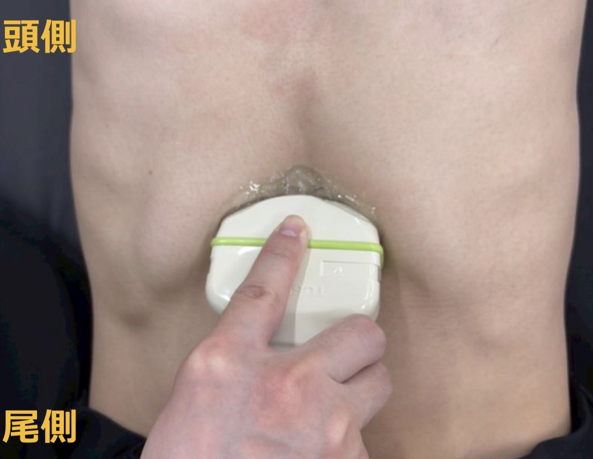
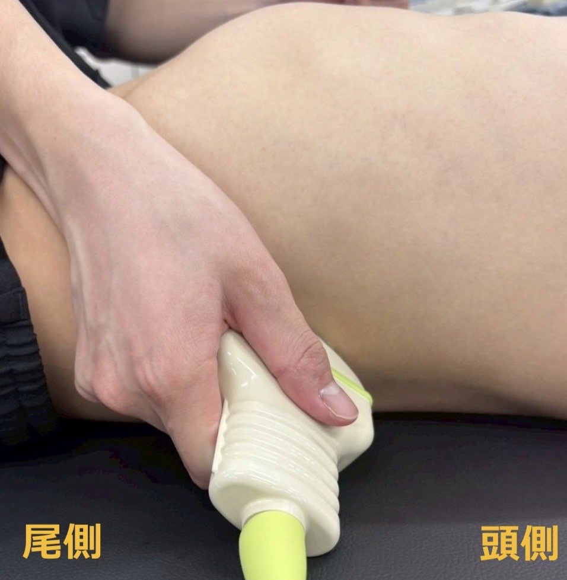
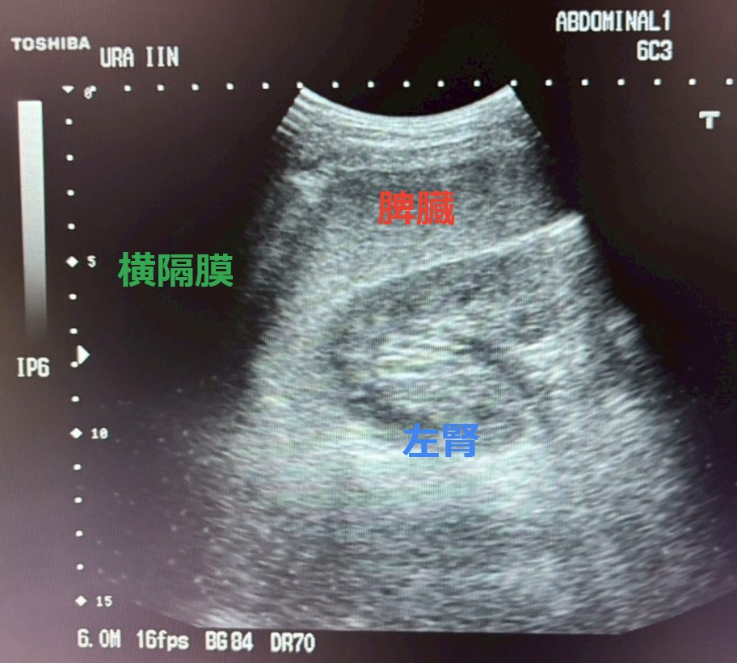

QUICK CHECK
2周目以降の方へ
PART 1 — 評価チェックリスト
各部位でこれが見えたらOK！
描出できたか、見ながら確認しよう
| 🫀 心窩部 | 🟦 モリソン窩 ＋右胸部 |
🟪 脾周囲 ＋左胸部 |
|---|---|---|
| 肝臓が画面上部に描出 | 肝腎境界が明瞭 | 脾腎境界が確認できる |
| 心膜腔が確認できる | モリソン窩に液体なし | 脾周囲に液体なし |
| 心膜液がない | 扇動走査を実施した | 扇動走査を実施した |
| 扇動操作を実施した | カーテンサイン確認 | カーテンサイン確認 |
PART 2 — 手順チェック
共通チェック
1
プリセットは正しいか
2
コンベックスプローブを選択できているか
3
マーカーの向きは正しいか
4
ゼリーの量は十分か
5
ポジショニングは適切か
6
患者さんへの声かけをした
心窩部
PROCEDURE
1
プローブは上から持つ
2
肋骨弓にはめ込むように当てる
3
患者さんに息を吸ってもらうことで心臓を画面中央へ誘導する
4
扇動操作で心臓を広く観察する
5
心膜液貯留の有無を確認する
プローブの持ち方

正常エコー像

💡 TIPS — うまくいかないとき
最初はきちんと寝かせた状態で施行する
吸気時にプローブの位置をズラさない → しっかり押し込んでおくイメージ
心臓は左に寄っているとはいえ、ほぼ正中にある
モリソン窩・右側胸部
PROCEDURE
1
右中腋窩線上・剣状突起の高さの肋間に当てる
2
肋骨の走行に注意してプローブを当てる
3
扇動操作で広く観察する
4
モリソン窩に腹水貯留がないか確認する
5
1肋間上げて呼吸を指示 → カーテンサインを確認する
6
右側胸部における胸水貯留の有無を確認する
プローブの持ち方

正常エコー像

💡 TIPS — うまくいかないとき
小指・薬指を患者さんの体につけてプローブを安定させる
実際に肋間を触って位置を確認する
1肋間上げたり下げたりして探す
プローブが腹側に寄り過ぎていない？ 腎臓は背側にある
超音波ビームが背中の方へ向くようにプローブを当てる
腕を上げてもらう、または息を吸って止めてもらう
脾周囲・左側胸部
PROCEDURE
1
左後腋窩線上・剣状突起の高さの肋間に当てる
2
肋骨の走行に注意する（モリソン窩よりプローブを縦に近づける）
3
扇動操作で広く観察する
4
脾周囲に腹水貯留がないか確認する
5
1肋間上げて呼吸を指示 → カーテンサインを確認する
6
左側胸部における胸水貯留の有無を確認する
プローブの持ち方

正常エコー像

💡 TIPS — うまくいかないとき
小指・薬指を患者さんの体につけてプローブを安定させる
モリソン窩の時よりも背側の肋間に当てる
実際に肋間を触って位置を確認する
1肋間上げたり下げたりして探す
腕を上げてもらう、息を吸って止めてもらう